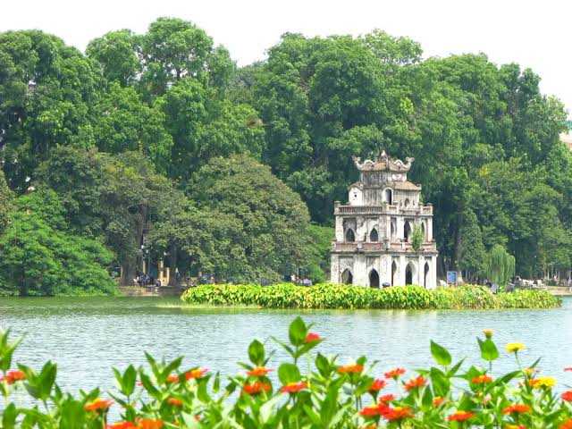
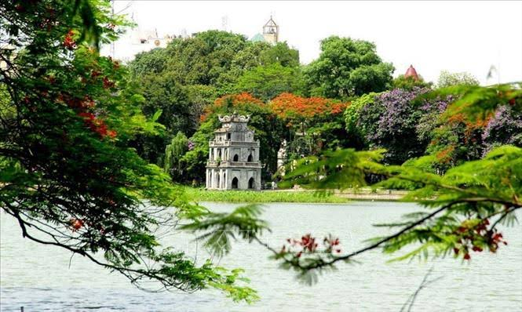
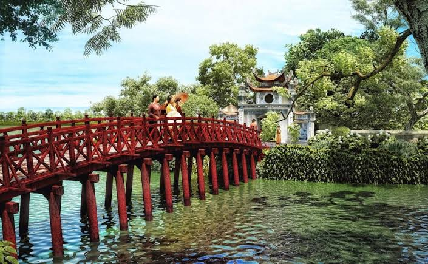
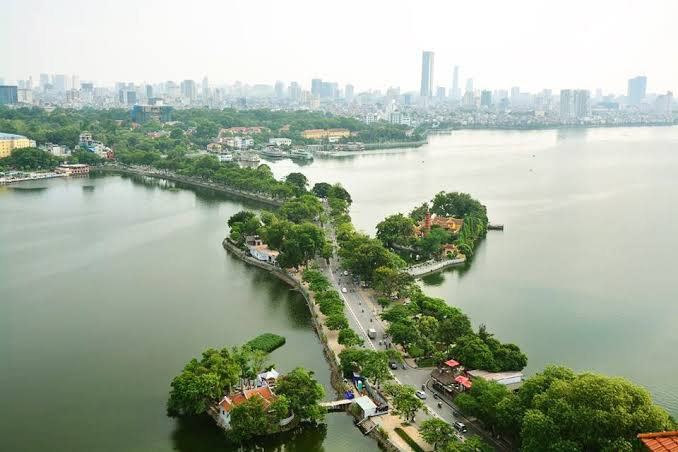
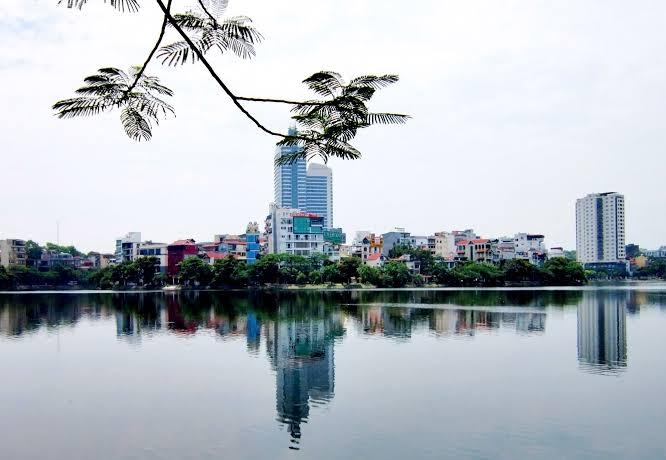

国の文化的および政治的中心地として、ハノイには多くの美しい景観があり、観光客を魅了するユニークな特徴があります。
ここでは、VNTRIP.VNがハノイを訪れる際に見逃せない最も有名なランドマークを紹介したいと思います。
ソードレイクまたはホアンキエム湖は、首都に旅行するときにハノイを訪れる場所の 1つです。
中央の中央に位置するソードレイクは、この千年の歴史を持つ街の中心にあり、
湖の表面は古代の木、柳の木、毛、寺院、古代寺院を映す大きな鏡のようなものです。
苔むした古い塔、新しい高層ビルが青空にそびえています。
|  |  |  |  |  |